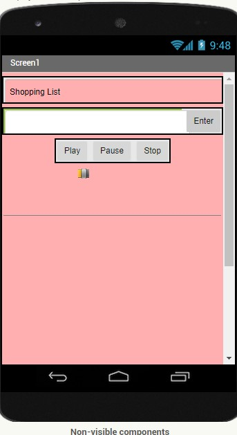

The picture shown above is for an App that was made in the MIT app inventor. This app is a new and improved shopping list (or to do list) that can be used whenever you're heading out and you have a lot of things you need to get. Whatever items you need you just type in the text box and then click enter. Your items will appear on a list. As you are shopping and find things that are on the list, all you have to do is click on that particular item and it will delete off of your list. On this app you also have music playing if you what to put in some earbuds and listen to some good songs while shopping. The song can be paused or stopped at any given time, and below those buttons you will see a slider for the volume. Enjoy!